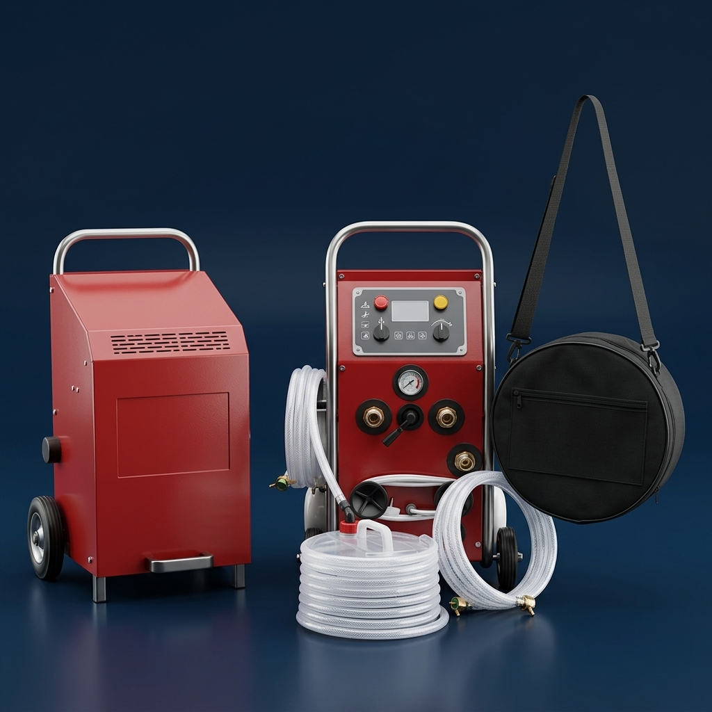

Haal de warmte terug in huis met een schone radiator
Blijft jouw radiator koud aan de onderkant? Slib, roest en kalk verminderen de warmteafgifte. Wij reinigen je radiatoren professioneel en machinaal. Verbeter je comfort en verlaag mogelijk je energiekosten.
Veelvoorkomende verwarmingsproblemen
Na verloop van tijd hopen vuil, roest, kalk en slib zich op in het verwarmingssysteem. Dit kan leiden tot de volgende herkenbare problemen in huis:
Koud aan de onderkant
De radiator voelt aan de bovenkant warm aan, maar blijft aan de onderkant hardnekkig koud. Dit wijst vaak op zwaar slib onderin.
Trage opwarming
Het duurt ongewoon lang voordat de kamer de gewenste temperatuur bereikt, waardoor je comfort afneemt.
Overbelaste CV-ketel
De cv-ketel of warmtepomp moet merkbaar harder werken om het water rond te pompen, wat leidt tot extra slijtage.
Stijgende gaskosten
Omdat het systeem inefficiënt draait door blokkades en aanslag, kunnen je gaskosten en stookrekening onnodig stijgen.
Reiniging onder gecontroleerde druk
Wij maken gebruik van moderne, speciaal ontworpen spoelapparatuur die water met pulserende lucht door de radiatoren stuurt om hardnekkig vuil los te weken en af te voeren.
Machinale radiatorreiniging voor optimaal comfort
De meest effectieve manier om je verwarmingssysteem te herstellen is een grondige, machinale radiatorreiniging (powerflushing). Hiermee spoelen we het opgebouwde slib en ijzeroxide onder gecontroleerde druk uit het systeem.
Professionele reinigingsapparatuur
Met professionele reinigingsapparatuur helpen wij interne vervuiling en slibophoping in verwarmingssystemen te verminderen.
Onze spoelunits maken gebruik van een gesloten circuitsysteem. Onder gecontroleerde druk worden pulserende lucht- en waterstromen door het systeem geleid. Hierdoor lossen kalk- en slibophopingen effectief op zonder dat leidingen gedemonteerd hoeven te worden.

Voor en na reiniging
Gebruik de slider of de pijltjestoetsen om het verschil te zien. Slecht doorstromende en vervuilde radiatoren presteren minder en kosten meer energie.
Wat levert het jou op?
Een verstopt verwarmingssysteem verbruikt ongemerkt veel meer gas. Bereken hieronder een schatting van je potentiële jaarlijkse besparing na een professionele reiniging.
Onze berekening is gebaseerd op een gemiddelde verbetering van 15% tot 25% in warmteoverdracht en systeemefficiëntie na powerflushing.
Heb je nog vragen?
Hier vind je antwoorden op de meest gestelde vragen over onze radiatorreiniging service. Staat je vraag er niet bij? Stel hem gerust via het formulier.